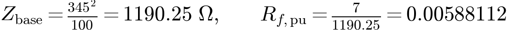
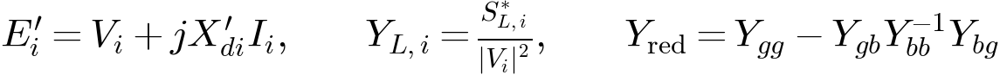
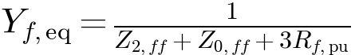
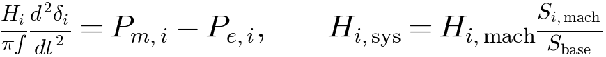
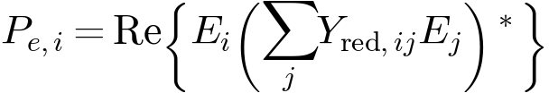

EE 315 Assignment 10
Transient Stability Assessment of a Power System
and Identification of Critical Clearing Time
| Course | EE 315 – Power Systems |
|---|---|
| Assignment | Project / Assignment 10 |
| Name | Akarsh J (Member 1) |
| Roll Number | 240002007 |
| Group | 04 |
| Project Lead | Akarsh J |
| Project Code | Assignment10_Akarsh_G4_M1.m |
1 Group Members
| Member | Roll Number | Name |
|---|---|---|
| Member 1 | 240002007 | Akarsh J (Project Lead) |
| Member 2 | 240002073 | Sreehari |
| Member 3 | 240002043 | Naman V Shetty |
| Member 4 | 240002037 | Mayur Soni |
| Member 5 | 240002017 | Bhasuru Nikhil |
| Member 6 | 240002069 | Ridhi Shakkar |
2 Introduction
The objective of this project is to model a nine-bus power system and assess its transient rotor-angle stability following a single-line-to-ground fault. The program determines the initial operating point, simulates generator rotor motion for different fault durations, and searches for a critical clearing-time bracket. The last digit of roll number 240002007 gives Rf = 7 Ω.
3 System Model and Fault Description
The model uses the three-generator, nine-bus MATPOWER case9 network. A phase-a-to-ground fault is applied on line 7–8, 1% of the line length from bus 8. It starts at 0.100 s and is cleared by opening that line at both ends. No automatic reclosure is included.
| Parameter | Value / assumption |
|---|---|
| System bases | 100 MVA, 345 kV line-to-line, 50 Hz |
| H (s), common system base | 23.64, 6.40, 3.01 |
| X′d (pu) | 0.0608, 0.1198, 0.1813; generator X₂ = X′d |
| Damping D | 0 for every generator, following Lecture 30 |
| Line sequence assumptions | Z₂ = Z₁, Z₀ = 3Z₁, B₀ = B₁/3 |
| Transformer grounding | Generator-side delta / transmission-side grounded wye |
| Dynamic loads | Constant impedance; equal positive/negative sequence impedance; zero sequence open |
The network uses MATPOWER case9 reactances, charging and power schedules; line resistance is set to zero following Lecture 30. The dynamic and sequence parameters are declared study inputs, not data supplied in the slides. Exciters, governors, subtransient electromagnetic behavior and negative-sequence heating are omitted.
4 Software Implementation & Code Availability
The source file is supplied as Assignment10_Akarsh_G4_M1.m. Run results = Assignment10_Akarsh_G4_M1; in MATLAB. No additional toolbox is required. Outputs are saved to results_matlab/. The repository link will be added after publication.
This page executes the JavaScript implementation in your browser. GitHub Pages serves the MATLAB file as a download; it does not execute MATLAB.
5 Formulas Used
5.1 Per-Unit Fault Resistance

5.2 Initial Voltages and Network Reduction

5.3 Single-Line-to-Ground Fault
I₀ = I₁ = I₂ and Iₐ = 3I₁. The equivalent shunt added at the positive-sequence fault point is:

The positive-sequence network already represents its own driving-point impedance; it is not added again in this shunt.
5.4 Swing Equations


5.5 Stability Criterion and Critical Clearing Time
A run fails if a pairwise unwrapped rotor-angle separation reaches 360° during the fault or the 20 s after clearing. Scan durations in 0.05 s steps and bisect the first passing/failing bracket to a width of at most 0.001 s. Passing a finite trajectory does not prove asymptotic stability.
6 Test Case
6.1 Problem Statement
The loads at buses 5, 7 and 9 are 90+j30, 100+j35 and 125+j50 MVA. Scheduled G2/G3 powers are 163/85 MW. The study uses 100% loading, 50 Hz, zero damping, and zero transmission resistance. The retained fault resistance is 7 Ω. Mechanical powers are 0.67, 1.63 and 0.85 pu.
6.2 Program Output
| Simulation result | ReadyRun a duration to inspect the response |
|---|---|
| CCT bracket (fault duration) | —50 ms scan followed by bisection |
| Peak pairwise angle | —360° pole-slip threshold |
Unwrapped electrical angles, in degrees
Preparing the model…
The interactive output uses the JavaScript solver. Native MATLAB execution was unavailable during preparation; run the supplied .m file locally to generate MATLAB output.
6.3 Final Results
No finite CCT identified in the sampled range 0–3 seconds. All 61 durations (0.05 s spacing) passed the 360° relative-angle criterion over 20 s after clearing. This does not prove infinite CCT or stability for every unsampled duration.
6.4 Verification
The full scan is repeated with a 1 ms step and a 40 s post-clear horizon. Independent Newton power flow and DOP853 integration check representative durations. The MATLAB source has not been executed in MATLAB in this environment.
7 Conclusion
The slide-based undamped classical model retains synchronism for the sampled line 7–8 SLG fault durations. A finite CCT was not found. The result is specific to the declared network, fault, grounding and observation criterion.
Lecture 30 pages 3–7 supply the swing equation, common-base inertia and modeling assumptions. Its page 17 time formula requires zero electrical power during the fault and is therefore not applied here. RK4, network elimination and the numerical scan implement the model; they are not claimed to be formulas printed in the slides.